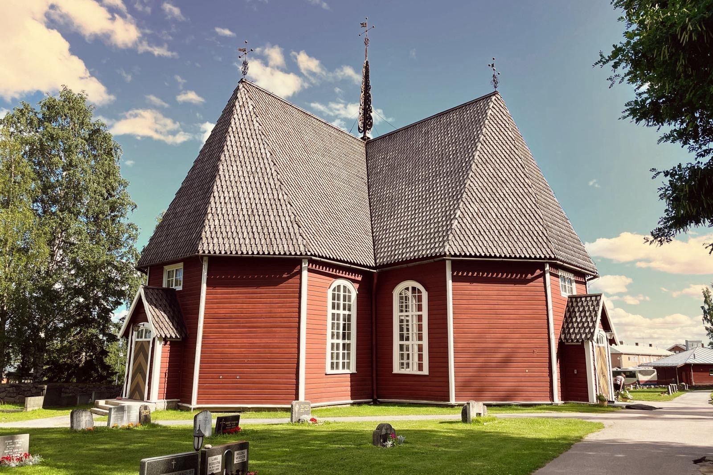
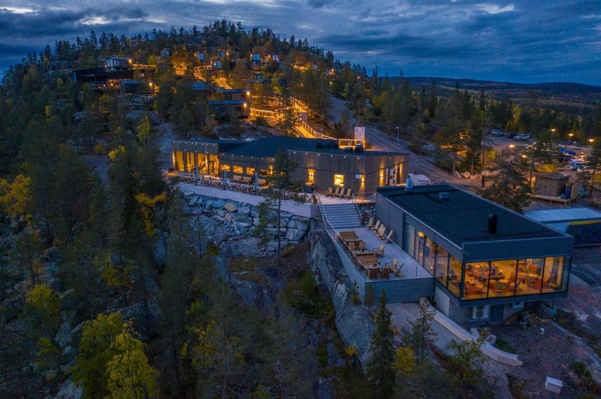
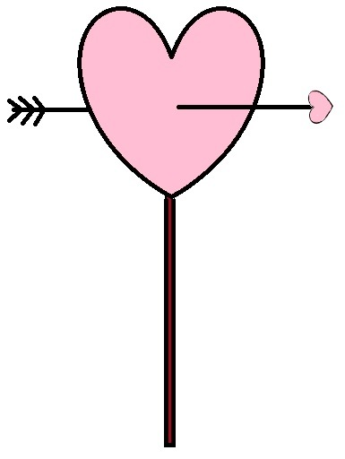
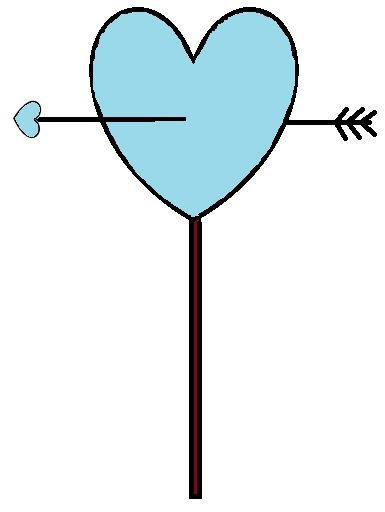

We’re happy to invite you to celebrate our day with us. On this page you’ll find all the important wedding details – from the venues and how to get there to accommodation, RSVP and gifts.
Date & Location
25 July 2026
Ceremony: Matarengi Church at 2 PM (Swedish time)
Reception: Lapland View Lodge (until 1 AM...)
At this point we would like to remind you that Swedish time is 1 hour behind Finnish time. This is relevant if you travel there from Finland. Your mobile phone might connect to a Swedish service provider and automatically switch to Swedish time, but if not, please bear this in mind as our schedule will be in Swedish time.
The day begins with the wedding ceremony at the church. Right after the ceremony, we’ll take a group photo in front of the church. After that, you’ll have time to make your way to the reception venue, freshen up your makeup, and check in to your accommodation if needed.
At the venue, the celebration starts with a welcome toast and congratulations to the couple. After this, we will serve you dinner, including drinks with the meal. As the evening goes on, the restaurant bar will be open for anyone who wishes to purchase additional drinks.
Later in the evening, we’ll enjoy a relaxed time together with a live band, the first dance, and lots of fun—just as a great wedding celebration should be.
If you wish to make a speech at the reception, please let us know so we can arrange a timeslot for you. You can contact maid of honor Heli on +358 40 701 9396 or by email meanhaat2026@gmail.com
Matarengi Church

Matarengi Church (Swedish: Övertorneå kyrka) is located in the center of Övertorneå in northern Sweden. This beautiful historic church was built between 1735 and 1737 and is one of the best-preserved 18th-century churches in the region.
The church’s timeless atmosphere, complemented by Sweden’s oldest pipe organ still in use, creates a dignified and memorable setting for the wedding ceremony.
Lapland View Lodge

Lapland View Lodge is located on Luppioberget hill, just outside Övertorneå. Built in harmony with the surrounding nature, this scenic hotel is open year-round and offers a stunning setting for a wedding celebration.
The two main buildings house the reception, restaurant, bar, and a cozy lounge with a fireplace. The restaurant serves dishes prepared with locally sourced ingredients. The hotel buildings, spa area, and 40 cabins feature large windows that offer breathtaking views over the Tornio River Valley and the vast northern scenery.
Why especially here?
Luppioberget hill is not only the childhood summer trip destination of Satu, but it also perfectly mirrors Ville's inner landscape with its views of the Tornionjoki River and the surrounding hills. Additionally, it is located almost exactly halfway between the childhood homes of the couple (Satu 67 km and Ville 62 km), making it a pretty good compromise in terms of location!
How do I get there?
Matarengi Church: Matarengivägen 31, 957 31 Övertorneå, Sweden
Lapland View Lodge: Luppio 202, 957 91 Övertorneå, Sweden.
More infoYou can also follow the signs below after crossing the Aavasaksa bridge to the Swedish side.


Accommodation
There are several accommodation options near the venue – here are the couple’s recommendations. Both options offer 15% discount with reservation code MEANHAAT. You can also ask for early check-in and/or late check-out for an additional price.
Lapland View Lodge
Lapland View Lodge is the reception venue, and the couple will stay here.
Lapland View Lodge offers high-quality accommodation in cabins with large glass windows. A spa area and sauna with stunning views are available for an additional fee. The resort management has promised to open the spa area as an exception in the noon hours the day after the wedding.
For more information, click here.
You can book by email: laplandviewlodge@explorethenorth.se
Matarengi Lodge
Matarengi Lodge offers high-quality hotel accommodation in the center of Matarengi, about 10 km from the venue. The hotel has a spa area and sauna. From the reception venue you can get there easily, for example by taxi.
For more information, click here.
You can book both by email: matarengilodge@explorethenorth.se
RSVP
We kindly ask you to RSVP by 22 May 2026
Please use this form .
A Little Note on Gifts
We already have everything we need at home. Having you with us on our special day is truly the best gift we could ask for.
If you’d still like to give something, a small contribution to our honeymoon fund is more than enough.
Satu Peura
BIC: SBANFIHH
IBAN: FI51 3939 0035 0660 67